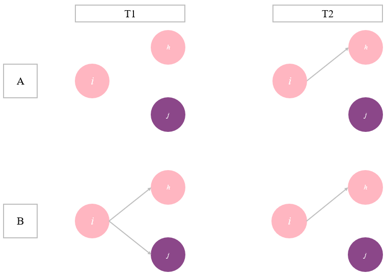
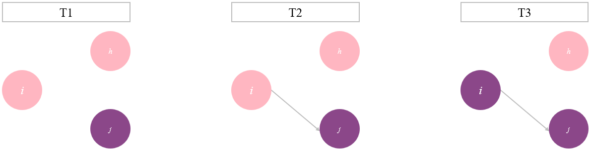
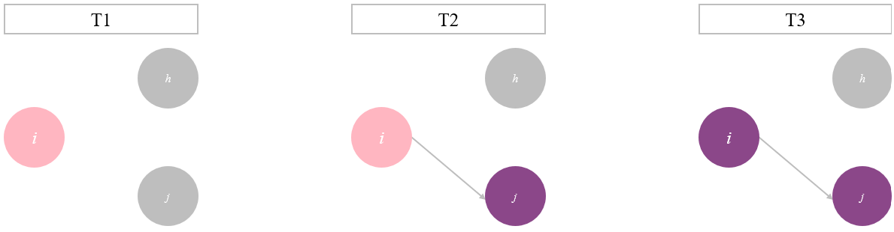

Clustering in social networks is characterised by individuals having
ties with similar others, and having fewer ties with dissimilar others
(Azizifard 2014). That there is clustering
within social networks, is a well established fact, networks cluster
around gender (e.g. Suurna and Leibbrandt
2022), ethnicity (e.g. Leszczensky and
Pink 2019), political preference (e.g.
Oosterhoff et al. 2022), and social economic status (e.g. Chabot 2024), to name a few. Clustering
can thus be the result of both visible, and invisible personal
characteristics. In the following chapter, an overview of mechanisms of
network clustering will be presented specifically focussing on
homophily/ preference and social learning/ influence effects, with
regards to civic engagement.
Homophily
The core principle of homophily is that similar people prefer each
others’ company over the company of dissimilar others (McPherson et al. 2001). This process is
visualised in Figure 1. Concretely, this means that people with
behavioural attitude A (pink in Figure 1) prefer to make ties with other
people with attitude A, rather than with people with attitude B
(purple). Because actor i and h hold similar
attitudes, they are more likely to create a tie, than actor i
and j (Figure 1, A). However, homophily does not just take
place when making a tie with another person, it also has an effect on
what ties remain (McPherson et al. 2001).
Dissimilar people are more likely to break their tie, than people who
hold similar opinions (Figure 1, B).
Figure 1.
Visualisation of homophily

People tend to interact with similar others for multiple reasons. One
simple explanation is geography (McPherson et al.
2001), meaning that tie creation is dependent on existing in the
same social context. Oftentimes, our contexts consist of people who are
relatively similar to ourselves. For example, we meet people at our work
or school, but the people we meet there are often of a similar social-
and cultural background as ourselves. This leads to clustering in social
networks, simply because ego mostly meets similar alters. Homophily in
civic attitudes can manifest through geography, simply because some
universities may encourage these attitudes more strongly than other
universities, leading to differences in civic attitudes between
universities.
However, just context cannot explain homophily, as homophily is also
found in mixed environments (e.g. Leszczensky and
Pink 2019). People tend to prefer to interact with similar others
for a myriad of reasons, for example, ease of communication and a shared
culture (McPherson et al. 2001). Holding
differing attitudes, can be reason for conflict and miscommunication,
decreasing the likeliness of initiating and maintaining ties. For civic
engagement, this may show through preferences to have ties with others
who have the same outlook on what a citizen’s role should look like in
civil society. Thus, solely based on selection effects, it can be
expected that people have more ties with similar others, than with
dissimilar others.
Social learning
However, it is, of course, not the case that people only
make ties with people who are exactly like themselves. When considering
a tie with another person, there are uncountable factors that contribute
to whether that tie is actually made. Thus, preferences cannot solely
explain clustering in social networks. Another factor is social
learning, which considers that people learn from their friends, which
can change their attitudes and behaviours (Marsden and Friedkin 1993). This means that
people can make a tie with another person, regardless of their
attitudinal differences, but after the tie is made, ego and alter become
more similar to each other. This process is represented in Figure 2.
Figure 2.
Visualisation of influence

Influence effects can take place for many reasons. Due to our
connection with other people we may come to new insights, and change our
attitudes accordingly (Marsden and Friedkin
1993). Influence effects can also take place, because ego wants
to minimise the amount of social disapproval they get from their alters.
By changing their attitude or behaviour to match their network’s, ego
minimises the chances of social conflict.
For civic attitudes this means that a civilly disengaged ego can make
a tie with a civilly engaged alter. When these two have a connection,
their attitudinal characteristics become more similar to each other.
Ego, who is disengaged, will become more engaged, because they want to
fit in with the alter who is civilly engaged. This process can also work
the other way around.
Combining the processes of homophily and influence, lead to the
expectation of networks being clustered around civic attitudes.
According to the homophily principle, students would be more likely to
make and keep ties with similar others, and even if they make ties with
dissimilar others, influence effects will ensure clustering in the
network. Thus, these two principles combined lead to the following
hypothesis:
H1: Students in Michigan learning communities, who are more
similar in their civic engagement attitudes are more likely to have ties
with one another than with people who differ from them in their
attitudes.
Civic attitudes form an interesting behavioural characteristic to
look at in light of network clustering, because it is a characteristic
that tends to be invisible to until you get to know someone. Civic
attitudes is not necessarily an attitude that can be clearly seen in
others, before making a connection with them. Figure 3 represents this
uncertainty, by showing both alters being grey, as ego cannot know their
attitudes. When making a tie, ego thus chooses ‘blindly’ with whom they
want to make a tie. This directly undermines the idea of selection
effects, as ego cannot select on civic attitudes when making a tie,
while it strengthens the potential effects of influence.
Figure 3.
Visualisation of tie-making in uncertain situations, with an
influence effect

Once ego and alter make a tie, and they get to know each other
better, it becomes clear that they differ in their civic attitudes. Ego
can now break the tie, something that would be likely according to the
homophily principle, or keep the tie, allowing for influence effects to
take place. This paper argues that people are unlikely to break a tie
based on differences in civic attitudes. Civic attitudes are often not
at the core of a person’s identity, making it a less important
characteristic when deciding with whom to make and maintain ties. Once
people already have a tie, and then find out that they differ in this
aspect, ego and alter have already established a relationship, which is
likely to remain despite differences in some attitudes. The created tie
does open the way for influence effects to take place. Despite civic
attitudes not being a core part of their identity, ego can still learn
through interactions with alter, thereby changing their attitudes.
Thus, taking both preference and influence effects together, for
civic attitudes, this paper expects that influence effects are stronger
than preference effects for explaining clustering in social networks.
This leads to the following hypothesis:
H2: The influence effect is stronger than the selection effect
for civic engagement attitudes, for students in Michigan learning
communities.
1.2 Social learning
However, it is, of course, not the case that people only make ties with people who are exactly like themselves. When considering a tie with another person, there are uncountable factors that contribute to whether that tie is actually made. Thus, preferences cannot solely explain clustering in social networks. Another factor is social learning, which considers that people learn from their friends, which can change their attitudes and behaviours (Marsden and Friedkin 1993). This means that people can make a tie with another person, regardless of their attitudinal differences, but after the tie is made, ego and alter become more similar to each other. This process is represented in Figure 2.
Figure 2.
Visualisation of influence

Influence effects can take place for many reasons. Due to our connection with other people we may come to new insights, and change our attitudes accordingly (Marsden and Friedkin 1993). Influence effects can also take place, because ego wants to minimise the amount of social disapproval they get from their alters. By changing their attitude or behaviour to match their network’s, ego minimises the chances of social conflict.
For civic attitudes this means that a civilly disengaged ego can make a tie with a civilly engaged alter. When these two have a connection, their attitudinal characteristics become more similar to each other. Ego, who is disengaged, will become more engaged, because they want to fit in with the alter who is civilly engaged. This process can also work the other way around.
Combining the processes of homophily and influence, lead to the expectation of networks being clustered around civic attitudes. According to the homophily principle, students would be more likely to make and keep ties with similar others, and even if they make ties with dissimilar others, influence effects will ensure clustering in the network. Thus, these two principles combined lead to the following hypothesis:
H1: Students in Michigan learning communities, who are more similar in their civic engagement attitudes are more likely to have ties with one another than with people who differ from them in their attitudes.
Civic attitudes form an interesting behavioural characteristic to look at in light of network clustering, because it is a characteristic that tends to be invisible to until you get to know someone. Civic attitudes is not necessarily an attitude that can be clearly seen in others, before making a connection with them. Figure 3 represents this uncertainty, by showing both alters being grey, as ego cannot know their attitudes. When making a tie, ego thus chooses ‘blindly’ with whom they want to make a tie. This directly undermines the idea of selection effects, as ego cannot select on civic attitudes when making a tie, while it strengthens the potential effects of influence.
Figure 3.
Visualisation of tie-making in uncertain situations, with an influence effect

Once ego and alter make a tie, and they get to know each other better, it becomes clear that they differ in their civic attitudes. Ego can now break the tie, something that would be likely according to the homophily principle, or keep the tie, allowing for influence effects to take place. This paper argues that people are unlikely to break a tie based on differences in civic attitudes. Civic attitudes are often not at the core of a person’s identity, making it a less important characteristic when deciding with whom to make and maintain ties. Once people already have a tie, and then find out that they differ in this aspect, ego and alter have already established a relationship, which is likely to remain despite differences in some attitudes. The created tie does open the way for influence effects to take place. Despite civic attitudes not being a core part of their identity, ego can still learn through interactions with alter, thereby changing their attitudes.
Thus, taking both preference and influence effects together, for civic attitudes, this paper expects that influence effects are stronger than preference effects for explaining clustering in social networks. This leads to the following hypothesis:
H2: The influence effect is stronger than the selection effect for civic engagement attitudes, for students in Michigan learning communities.